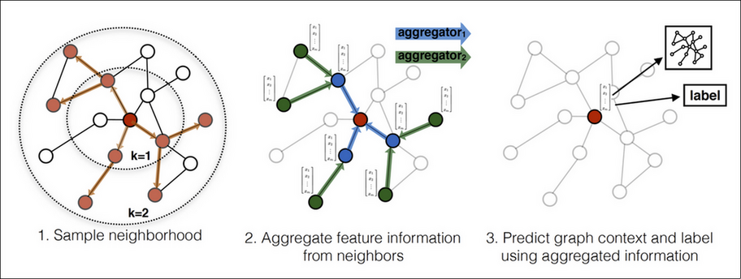

GNN
Table of Contents
1. GNN
1.1. Overview
相比于 vector 和 matrix, graph 是更一般化的数据结构, 例如用 graph 可以表示 matrix 但反过来不行.
图虽然可以用邻接矩阵 (adjacency matrix) 表示, 但不表示 graph 与矩阵是等价的, 因为邻接矩阵并不像普通的矩阵 (例如图像) 那样存在空间结构. 因为图本身是无序的, 对于 n 个 node 的图, 通过修改 node 在邻接矩阵中的索引, 可以构造成 \(n!\) 个邻接矩阵.
所以适用于图像的 conv2d 并不能直接应用于 graph, 需要有新的方法.
GNN 适用的领域主要包括:
- 蛋白质结构
- 社交网络
- 推荐系统
- …
1.2. Dataset
1.2.1. Overview
dataset 会包含如下信息:
- node 信息 (feature, label)
- edge 信息 (feature, label)
- graph 信息 (feature, label)
- connectivity 信息
以上信息中, connectivity 是必需的, 其它数据可能会缺少. 例如:
TUDataset 的 ENZYMES 数据集: 没有 edge 相关的信息, 也没有 graph 的 feature (attribute) 信息, 因为 ENZYMES 数据集主要是通过 node 和 connectivity 信息对 graph 的 label 进行预测
1.2.2. TUDataset
以 TUDataset 的 ENZYMES 数据集为例:
http://www.chrsmrrs.com/graphkerneldatasets/ENZYMES.zip
- ENZYMES 是一个 `graph focused` 的数据集, 即它是为了对 graph 进行分类. 除此以外,还有 `node focused` (对 node 进行分类)
- 一个有 600 个 graph, 记为 N
- graph 分为 6 类, 表示 6 种不同类型的酶 (如裂解酶, 转移酶, 连接酶…)
- 一共 19580 个 node, 记为 n, node 的 label 表示它是酶的某种组成部分 (可能指的是氨基, 羧基, 羟基等)
- 一共 74564 条边, 记为 m, 因为每条边用了两条有向边表示, 所以实际是 74564/2 条无向边,
├── ENZYMES_A.txt ├── ENZYMES_graph_indicator.txt ├── ENZYMES_graph_labels.txt ├── ENZYMES_node_attributes.txt ├── ENZYMES_node_labels.txt
1.2.2.1. A.txt
用邻接表 (Adjacency List) 形式保存的各个 node 的连接信息, 共 m 行
2, 1 3, 1 4, 1 1, 2 ...
1.2.2.2. graph_indicator.txt
每个 node 所属的 graph, 共 n 行
1 1 ... 2 2 ...
1.2.2.3. graph_labels.txt
每个 graph 所属的 labe, 共 N 行, 有 1,2,3,4,5,6 共 6 种值, 表示不同功能的酶.
6 6 6 ...
1.2.2.4. node_attributes.txt
每个 node 的属性, 共 n 行, 每行为 18 个值, 不清楚具体是什么意义.
11.000000, 15.887014, 37.780000, -0.510000, 1.701000, 93.900000, 4.000000, 5.000000, 2.000000, 4.000000, 4.000000, 3.000000, 3.000000, 4.000000, 4.000000, 3.000000, 6.000000, 2.000000 11.000000, 16.362935, 40.380000, -2.030000, 1.777000,102.600000, 2.000000, 7.000000, 2.000000, 6.000000, 2.000000, 3.000000, 3.000000, 2.000000, 6.000000, 1.000000, 8.000000, 2.000000 16.000000, 21.395072, 63.350000, 2.040000, 2.981000,136.000000, 2.000000, 7.000000, 7.000000, 6.000000, 4.000000, 6.000000, 6.000000, 2.000000, 8.000000, 2.000000, 7.000000, 7.000000 ...
1.2.2.5. node_labels.txt
每个 node 的 labe, 共 n 行, 有 1, 2, 3 共 3 种值, 表示 3 种不同的官能团?
1 1 1 ...
1.2.2.6. edge_labels.txt
n 行, 表示 edge 的 label. ENZYMES dataset 不包含这一项
1.2.2.7. edge_attributes.txt
n 行, 表示 edge 的 attribute. ENZYMES dataset 不包含这一项
1.2.2.8. graph_attributes.txt
N 行, 表示 graph 的 attribute. ENZYMES dataset 不包含这一项
1.2.3. Cora Dataset
from torch_geometric.datasets import Planetoid dataset = Planetoid(root='/tmp/Cora', name='Cora') print(f"{len(dataset)} graph") print(f"{dataset.num_classes} classes") print(f"{dataset.num_node_features} node features") print(f"{dataset.num_edge_features} edge features") print("--- graph[0] ---") data = dataset[0] print(f"{data.num_nodes} nodes") print(f"{data.num_edges} edges") print(f"x: {data.x.shape} ") print(f"y: {data.y.shape} ")
1 graph 7 classes 1433 node features 0 edge features --- graph[0] --- 2708 nodes 10556 edges x: torch.Size([2708, 1433]) y: torch.Size([2708])
cora 是 `node focused` (对 node 进行分类)
- 包含一个 graph
- 2708 个 node 代表 2708 篇论文
- node 的 feature[i] 代表是论文是否包含 keywords[i], keywords 一共 1433 个
- node 的 label 代表论文属于 7 个 class 中哪一个:
- Case_Based
- Genetic_Algorithms
- Neural_Networks
- Probabilistic_Methods
- Reinforcement_Learning
- Rule_Learning
- Theory
1.2.4. pyg dataset api
pytorch-geometric 通过 Data 来封装 graph
- data.x 表示 node 的 feature, [num_nodes, num_node_features]
- data.edge_index, 表示邻接表 [2, num_edges]
- data.edge_attr, 表示 edge feature, [num_edges, num_edge_features]
- data.y 表示 graph label, [1, *] (即 graph focused) 或 node label, [num_nodes, *] (即 node focused)
例如:
import torch from torch_geometric.data import Data edge_index = torch.tensor([[0, 1, 1, 2], [1, 0, 2, 1]], dtype=torch.long) x = torch.tensor([[-1], [0], [1]], dtype=torch.float) data = Data(x=x, edge_index=edge_index)
使用 TUDataset 解析 tudataset:
from torch_geometric.datasets import TUDataset dataset = TUDataset(root='/tmp/ENZYMES', name='ENZYMES') print(f"{len(dataset)} graph") print(f"{dataset.num_classes} classes") print(f"{dataset.num_node_features} node features") print(f" {dataset.num_node_labels} node labels") print(f" {dataset.num_node_attributes} node attributes") print(f"{dataset.num_edge_features} edge features") print(f" {dataset.num_edge_labels} edge labels") print(f" {dataset.num_edge_attributes} edge attributes") print("--- graph[0] ---") data = dataset[0] print(f"{data.num_nodes} nodes") print(f"{data.num_edges} edges") print(f"first 5 edges: \n{data.edge_index[:,:5]} ") # data.x 的 shape 为 [:,3], 它是 ndoe label 的 one-hot 编码 print(f"first 5 x:\n{data.x[:5,:]} ") print(f"y:\n{data.y}") # TUDataset 的构造函数接受一个 use_node_attr/use_edge_attr 参数, data.x 是否包含 # {node,edge}_attributes.txt 数据 dataset = TUDataset(root='/tmp/ENZYMES', name='ENZYMES', use_node_attr = True) print("---use_node_attr---") print(f"{dataset.num_node_attributes} node attributes") data = dataset[0] print(f"data.x shape: {data.x.shape[1]}={dataset.num_node_attributes}+3")
600 graph
6 classes
3 node features
3 node labels
0 node attributes
0 edge features
0 edge labels
0 edge attributes
--- graph[0] ---
37 nodes
168 edges
first 5 edges:
tensor([[0, 0, 0, 1, 1],
[1, 2, 3, 0, 2]])
first 5 x:
tensor([[1., 0., 0.],
[1., 0., 0.],
[1., 0., 0.],
[1., 0., 0.],
[1., 0., 0.]])
y:
tensor([5])
---use_node_attr---
18 node attributes
data.x shape: 21=18+3
根据 pyg 的 tu_dataset.py 的代码 (torch_geometric/datasets/tu_dataset.py), data.x 实际上是 node label 的 one-hot 编码 (如果使用了 use_node_attr, 还会有 node attribute), data.y 是 graph label. 因为 ENZYMES 数据集主要是根据 node label (氨基,羧基,羟基?) 及其连接关系对 graph 进行分类 (裂解酶, 转移酶, 连接酶…)
1.3. GCN Example
gcn 是 gnn 的一种方法, 另外还有 gat, deepwalk, graph_sage 等, 这些算法都有些类似,不同点主要在于如何去做 aggregation: 例如
- gcn 以 node degree 做权重进行 sum aggregation
- gat 会使用 attention score 做权重
1.3.1. Model
import torch import torch.nn.functional as F from torch_geometric.nn import GCNConv class Net(torch.nn.Module): def __init__(self): super(Net, self).__init__() self.conv1 = GCNConv(dataset.num_node_features, 16) self.conv2 = GCNConv(16, dataset.num_classes) def forward(self, data): x, edge_index = data.x, data.edge_index x = self.conv1(x, edge_index) x = F.relu(x) x = F.dropout(x, training=self.training) x = self.conv2(x, edge_index) return F.log_softmax(x, dim=1)
1.3.2. Train
model = Net() data = dataset[0] optimizer = torch.optim.Adam(model.parameters(), lr=0.01, weight_decay=5e-4) model.train() for epoch in range(50): optimizer.zero_grad() out = model(data) loss = F.nll_loss(out[data.train_mask], data.y[data.train_mask]) loss.backward() optimizer.step() model.eval() _, pred = model(data).max(dim=1) correct = float(pred[data.test_mask].eq(data.y[data.test_mask]).sum().item()) acc = correct / data.test_mask.sum().item() print('Accuracy: {:.4f}'.format(acc))
Accuracy: 0.7970
1.3.3. GCN for Classification
如上面的例子所示, gcn 总是针对 node 做 feature 的变换, 它不会改变图的结构. 那如何让它处理 ENZYMES 数据集, 即能输出一个和 node 无关的 global classification?
一种方法是加入一个 global node, 这个 node 和所有 node 相连, 训练时只针对这个 node 计算 loss
另一种方法是用 global pooling, 类似于图片上的 global average pooling, 即把所有的 node 的值平均
1.4. GCN Details
gcn (Graph Conv) 从 api 上看有以下的特点:
- gcn 不会修改 node 的连接关系 (edge_index)
- gcn 不会修改 node 的个数
- gcn 只会更新每个 node 的 feature, 所以 node feature 类似于 conv channel.
所以 gcn 工作时如下图所示, 每一层输出的图的形状是不变的.

实际上 gcn 做的和 conv 类似: 把 node a 和它的 neighbour node (b, c, d) 的数据汇聚 (aggregation) 在一起加以计算,做为 a 的输出.
1.4.1. GCN Layer
GCN Layer (https://arxiv.org/pdf/1609.02907.pdf) 定义了一种简单的 aggregation 的方法
\(\mathbf{x}_{i}^{(k)}=\sum_{j \in \mathcal{N}(i) \cup\{i\}} \frac{1}{\sqrt{\operatorname{deg}(i)} \cdot \sqrt{\operatorname{deg}(j)}} \cdot\left(\mathbf{\Theta}^{\top} \cdot \mathbf{x}_{j}^{(k-1)}\right)\)
- \(\mathbf{x}_{i}^{(k)}\), 表示 node \(i\) 经过第 \(k\) 次 conv 的结果
- \(j \in \mathcal{N}(i) \cup\{i\}\), 表示 \(i\) 和 \(i\) 的所有 neighbour node
- \(\mathbf{\Theta}^{\top} \cdot \mathbf{x}_{j}^{(k-1)}\), \(j\) 先和一个矩阵相乘
- \(\frac{1}{\sqrt{\operatorname{deg}(i)} \cdot \sqrt{\operatorname{deg}(j)}}\), 结果用 \(i\), \(j\) 的 degree 进行 normalize, degree 是指 node 的边数
- \(\sum_{j \in \mathcal{N}(i) \cup\{i\}}\), 最后求和 (或者 max, average)
1.4.2. MessagePassing
gcn 在做 aggregation 时可以抽象为以下几步:
- 前面的 \(\mathbf{\Theta}^{\top} \cdot \mathbf{x}_{j}^{(k-1)}\), 以及计算 degree. 这些处理不需要查找 \(\mathcal{N}(i)\)
- 查找 \(j \in \mathcal{N}(i)\)
- 使用 \(x_i^{k-1}\), \(x_j^{k-1}\) 的信息进行计算得到 \(t_i^{k-1}\)
- 使用 max/sum/average 等针对 \(t_i^{k-1}\) 进行聚合得于 \(x_i^k\)
pyg 通过 MessagePassing 类对上面四步进行了抽象, 使得用户可以把精力放在 1, 3 两步上, 例如 gcn 可以写成:
class GCNConv(MessagePassing): def __init__(self, in_channels, out_channels): super().__init__(aggr='add') # "Add" aggregation (Step 5). self.lin = torch.nn.Linear(in_channels, out_channels) def forward(self, x, edge_index): # x has shape [N, in_channels] # edge_index has shape [2, E] # Step 1: Add self-loops to the adjacency matrix. edge_index, _ = add_self_loops(edge_index, num_nodes=x.size(0)) # Step 2: Linearly transform node feature matrix. x = self.lin(x) # Step 3: Compute normalization. row, col = edge_index deg = degree(col, x.size(0), dtype=x.dtype) deg_inv_sqrt = deg.pow(-0.5) deg_inv_sqrt[deg_inv_sqrt == float('inf')] = 0 norm = deg_inv_sqrt[row] * deg_inv_sqrt[col] # Step 4-5: Start propagating messages. return self.propagate(edge_index, x=x, norm=norm) def message(self, x_j, norm): # x_j has shape [E, out_channels] # Step 4: Normalize node features. return norm.view(-1, 1) * x_j
当用户主动调用 propagate 时, pyg 会自动做类似的动作:
propagate() j = neighbour(i) temp[j] = message(x[j], ...) x[i] = max(temp[j])
forward () 和 message() 相当于需要用户实现的 1, 3 步.
1.5. Graph Sampling
以前面的 Cora 数据集上的 gcn 为例, 每次训练需要把整个 graph 都处理一遍, 相当于一个 epoch 需要处理所有的样本. 当 graph 中 node 很多时, 参数会更新的很慢且有可能内存不够.
graph sampling 是指通过对 node 采样降低网络规模
1.5.1. GraphSage
gcn 工作时以整个 graph 为输入 (它甚至包含没有 label 的 node), 并计算每个 node 的特征.
graphsage (Graph SAmple and aggreGatE) 工作时:
- sample, 以单个 node A 为中心, 通过 k step 采样出固定个数的 node
- aggregate k 次, 每次用不同的 aggregator.
- predict 得到 A 的特征
整个过程和 mini-batch SGD 有些类似.

另外, GraphSage 被称为 inductive, 是指在 sample 时会忽略那些没有 label 的 neighbour, 这些 node 的特征和连接关系并不会参与到训练过程.
当 graph 加入一个新的 node 时, 以这个 node 为中心执行一次 graphsage 算法就可以得到 node 的特征. 而 gcn 需要针对新的 graph 重新训练才可以.
1.6. Embedding
embedding 是用无监督的方法获得低维的向量表示, 例如 Word2vec
graph 上的 embedding 有两种:
- node embedding, 即把单个 node 变成低维向量
- graph embedding, 即把整个 graph 变成低维向量
1.6.1. DeepWalk
https://arxiv.org/pdf/1403.6652.pdf 2014/6
deepwalk 是一种 node embedding 算法
- 在 graph 上随机 walk, 得到一个 node 序列
- 在 node 序列上使用 skip-gram 得到 embedding
1.6.2. Graph2Vec
https://arxiv.org/pdf/1707.05005.pdf 2017/6
graph2vec 是一种 graph embedding 算法